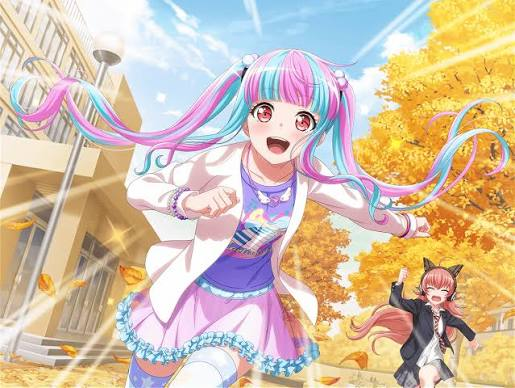

角色背景與雙重生活
PAREO 的本名為鳰原令王那，是一名來自千葉縣鴨川市的國中生。在學校裡，她是一位戴著眼鏡、把頭髮綁成黑色麻花辮、成績優異且循規蹈矩的模範生。然而，在這種壓抑的「好學生」表象之下，她其實非常熱愛原宿系的可愛事物，並且是偶像樂團 Pastel*Palettes 的超級狂熱粉絲。
因為害怕被同儕與家人側目，令王那一直將真實的自己隱藏起來。直到 CHU² 偶然在網路上看見了她翻彈電子琴的影片，並親自跑到鴨川將她發掘。CHU² 不僅肯定了她的才華，還給予了她展現真實自我的勇氣。從那一刻起，「PAREO」誕生了。她將頭髮染成鮮豔的雙色，換上可愛的服裝，將 CHU² 視為賦予她新生的「主人（CHU² 大人）」，並發誓對其展現絕對的忠誠與支持。
樂團定位與舞台風格
在 RAISE A SUILEN (RAS) 中，PAREO 擔任鍵盤手與和聲。有別於傳統鍵盤手總是安靜地站在定點，PAREO 的舞台表現極具爆發力與觀賞性。她能夠在演奏複雜旋律的同時，進行高難度的跳躍與舞蹈動作。她的鍵盤音色華麗且多變，完美地點綴了 RAS 以電子舞曲與重金屬為基底的強烈節奏，是樂團中不可或缺的視覺與聽覺焦點。
相關出沒資訊 (聯絡與合作洽詢)
若您想尋找 PAREO，請留意她可能處於「模範生模式」或「樂手模式」，請參考以下出沒資訊：
- 所屬學校： 鴨川中央國中 (以黑色麻花辮與眼鏡的姿態出現)
- 常駐地點： CHU² 的頂級豪華公寓錄音室、各大原宿系服飾店
- 興趣愛好： 應援 Pastel*Palettes (尤其是主唱丸山彩)、為 CHU² 準備餐點與打理生活
- 聯絡備註： 任何針對 RAISE A SUILEN 或 CHU² 的批評，都會引發她極度強烈的反彈。若想與她快速破冰，請準備 Pastel*Palettes 的限量周邊商品。